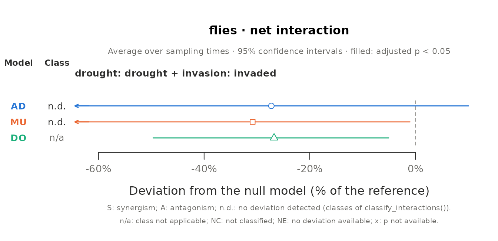
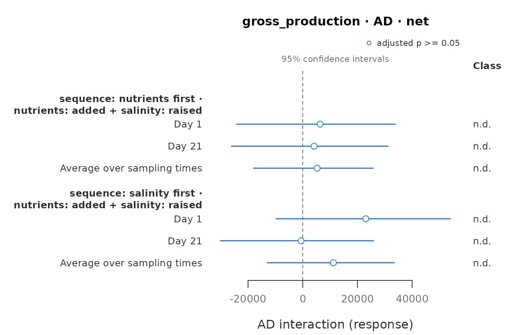
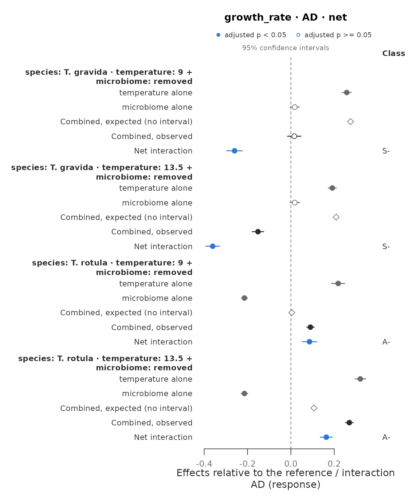
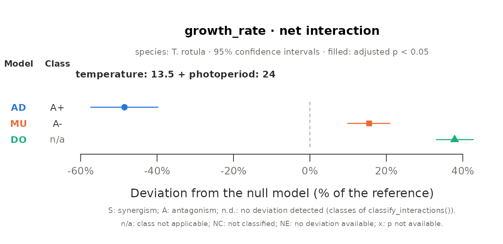
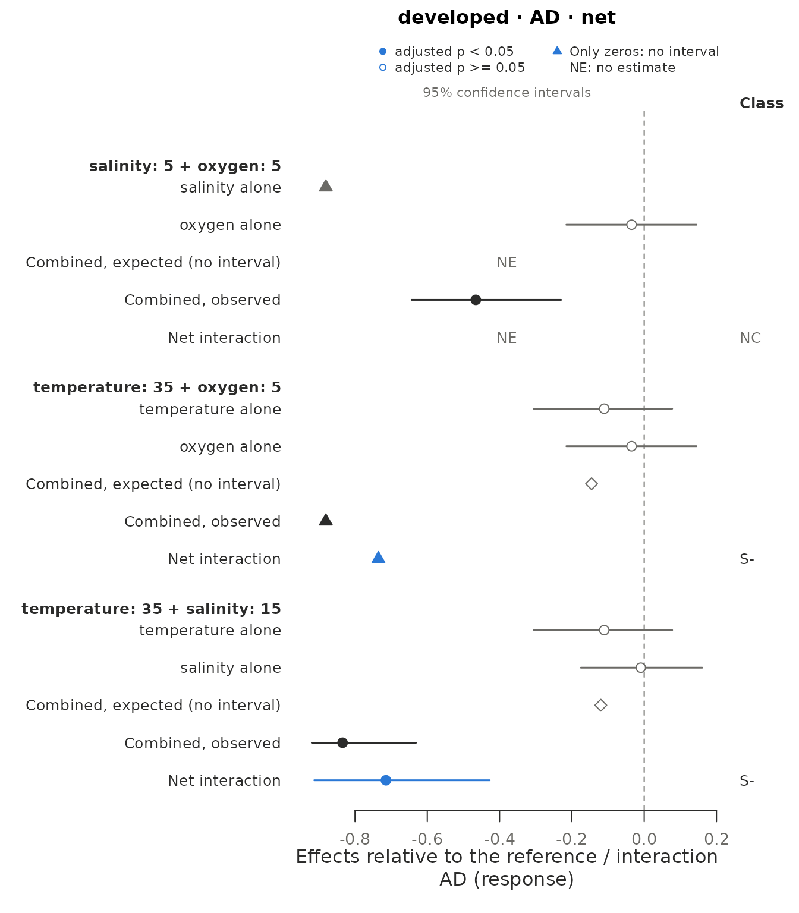
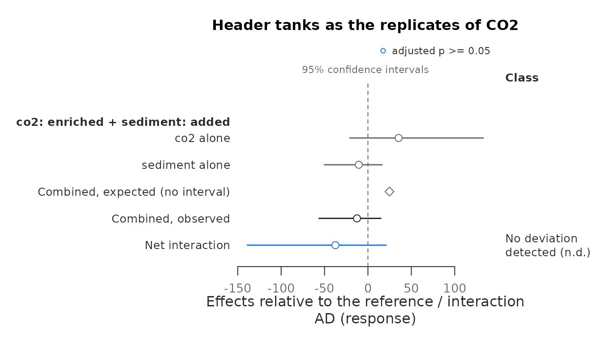
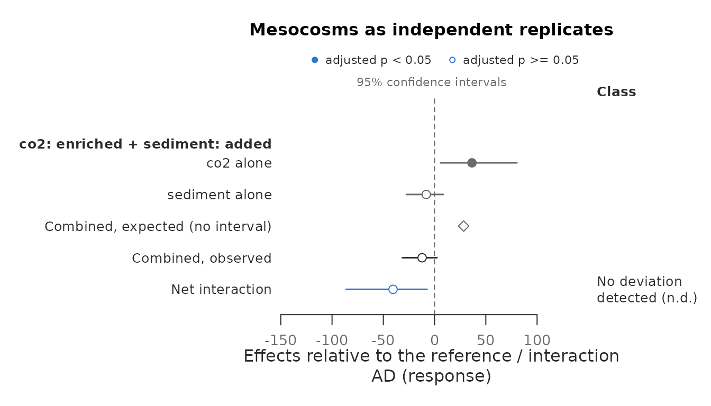
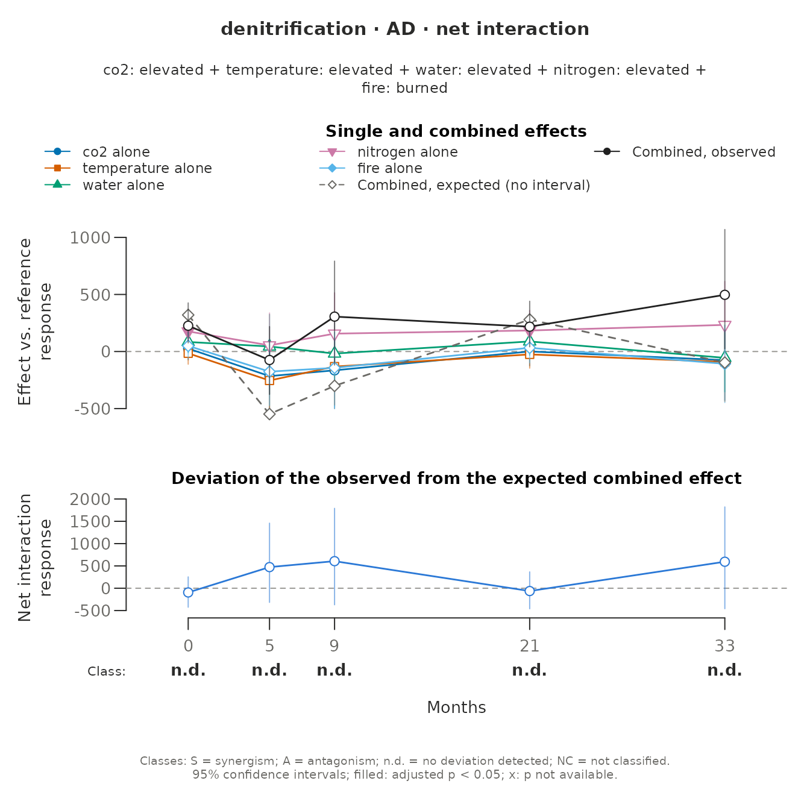

Case studies: reanalysis of published experiments
Source:vignettes/articles/case-studies.Rmd
case-studies.RmdThese case studies reanalyse six published experiments whose designs
differ in the number of stressors, in their levels and in the
interactions they identify, from a field experiment with two stressors
to a full factorial of five on split plots. Their data come with the
package, reduced to what the reanalyses use; the help page of each data
set gives its source, its licence and how it was prepared. Each section
describes the study and its design, how must models it and what it
finds. vignette("must") explains each step. The reanalyses
illustrate the package and do not replace those of the original
articles; where their conclusions differ, the section says why.
| Experiment | Stressors (levels) | Units and structure | Response | Contrast sets |
|---|---|---|---|---|
| Alba et al. (2026) | drought, invasion (2 x 2) | 40 field plots in 10 blocks, 4 samplings | arthropod counts | 1 pair |
| Fuggle et al. (2025) | nutrients, salinity, in two orders | 18 ponds, 2 samplings | biofilm production | 1 pair per order |
| Giesler et al. (2023) | temperature (3), photoperiod (3), microbiome (2) | 48 wells per combination, 2 species | growth rate | 8 pairs and 4 triples per species |
| Vasquez et al. (2017) | temperature (4), salinity (3), oxygen (3) | embryos of 6 mating pairs | embryos developed | 16 pairs, 12 triples |
| Hunn et al. (2024) | CO2, heatwaves, sediment, flow (24) | 128 stream mesocosms on 8 header tanks | invertebrate counts | 6 pairs, 4 triples, 1 of four |
| Niboyet et al. (2025) | CO2, warming, water, nitrogen, fire (25) | 128 quadrants of 32 plots, 5 samplings | potential denitrification | 10 pairs, 10 triples, 5 of four, 1 of five |
In the six experiments the stressors act in different ways, none is a
toxicant that acts specifically on a physiological process, the
responses are not mortality, and no stressor has the levels needed to
establish its stressor-effect relationship.
suggest_null_models() is therefore called with the same
criteria in every section. How the sensitivities of individuals to the
stressors are correlated is not known and is left unknown, so that each
of its values is tried; the guidelines of Schäfer & Piggott (2018)
then keep simple addition (AD), the multiplicative model (MU) and
dominance (DO), which is defined for pairs of stressors.
library(must)
suggest <- function(fit) {
suggest_null_models(fit, similar_action = FALSE, specific_action = FALSE,
mortality = FALSE, stressor_effect = FALSE)
}The residual checks of fit_responses() are switched off
(residual_checks = FALSE) only so that these case studies
run without the DHARMa package; in an analysis, keep the default.
Drought and plant invasion in a pine understory
Alba et al. (2026) asked how invasion by cogongrass (Imperata cylindrica), a grass that forms dense stands where it has been introduced in the southeastern United States, and drought change the arthropods of a regenerating longleaf pine understory in Florida. Forty plots were planted with pines and native plants in 2012; from spring 2013, rainout shelters simulated drought, and cogongrass was planted in half of the plots. Arthropods were collected with sweep nets in summer and fall of 2014 and 2015.
Each of ten blocks has one plot of each combination of the two
stressors, and every plot was sampled four times.
describe_design() finds the complete blocks, the repeated
measures and the single contrast set:
alba_design <- describe_design(alba_arthropods, stressors = c("drought", "invasion"),
control = c(drought = "ambient", invasion = "uninvaded"),
unit = "plot", time = "sampling", groups = "block")
alba_design
#> <must_design> 160 rows, 2 stressors, 4 observed treatment combinations
#> Stressors (control): drought (ambient), invasion (uninvaded)
#> Unit: plot | Time: sampling | By: none | Groups: block
#> Contrast sets: 1 candidate(s), 1 identifiable
#> Checks:
#> info Experimental unit: 'plot' (40 units, each in a single treatment
#> combination).
#> info Units per treatment combination: 10.
#> info Units are measured repeatedly (4 sampling times; 4 per unit).
#> Samplings of the same unit are not independent: by default
#> fit_responses() adds a random intercept per unit, which assumes
#> the same correlation between any two samplings of a unit;
#> temporal autocorrelation can be modelled through its `random`
#> argument.
#> info Identifiable contrast sets (net deviation): 1 with 2 stressors.
#> info 'block': 10 groups with 4 treatment combination(s) each
#> (complete blocks); no stressor is applied to whole groups.
#> fit_responses() adds a random intercept for 'block'.The analysis follows the total of the ten arthropod groups and the
flies, the group with the clearest interaction in the article. Both are
counts, and fit_responses() selects the negative binomial
for both, with random intercepts for the plot and the block; for the
total, the block intercept had a variance of zero and was removed.
alba_fit <- fit_responses(alba_arthropods, c("total", "flies"), alba_design,
residual_checks = FALSE, seed = 1, quiet = TRUE)
alba_fit
#> <must_fit> 2 response(s); time structure: interaction; dispersion: common; random effects: (1 | `.g_block`) + (1 | .unit)
#> Residual checks: not run; seed: 1
#> total: nbinom2 (log link; count, detected), AIC 1576.0, n = 160, missing = 0, residual checks: not run; random effects: (1 | .unit)
#> flies: nbinom2 (log link; count, detected), AIC 1003.6, n = 160, missing = 0, residual checks: not run
alba_est <- estimate_interactions(alba_fit, null_models = suggest(alba_fit), seed = 2026)
summary(alba_est)
#> Interactions: Krinsky-Robb simulation; small-sample correction; adjusted p-values (BH) below 0.05
#> Deviating / tested interactions by sampling time:
#> response model estimand 1 2 3 4 overall
#> total AD net 0/1 0/1 0/1 0/1 0/1
#> total MU net 0/1 0/1 0/1 0/1 0/1
#> total DO net 0/1 0/1 0/1 0/1 0/1
#> flies AD net 0/1 0/1 0/1 0/1 0/1
#> flies MU net 0/1 0/1 0/1 0/1 0/1
#> flies DO net 0/1 0/1 0/1 0/1 0/1
#>
#> Classes of the net deviations (Piggott et al. 2015) by sampling time:
#> response model 1 2 3 4 overall
#> total AD 1 AD 1 AD 1 AD 1 AD 1 AD
#> total MU 1 AD 1 AD 1 AD 1 AD 1 AD
#> flies AD 1 AD 1 AD 1 AD 1 AD 1 AD
#> flies MU 1 AD 1 AD 1 AD 1 AD 1 AD
#>
#> Agreement between null models (AD, MU, DO), robust/model-dependent/conflicting/none:
#> response estimand 1 2 3 4 overall
#> total net 0/0/0/1 0/0/0/1 0/0/0/1 0/0/0/1 0/0/0/1
#> flies net 0/0/0/1 0/0/0/1 0/0/0/1 0/0/0/1 0/0/0/1
#>
#> Counts of boundary tests and of rows not estimated: `$interactions`; classes: `$classes`.
e <- alba_est$estimates
# Effects of each stressor alone on the total, as multiples of the control
single <- e[e$response == "total" & e$component == "single" & e$null_model == "MU",
c("time", "stressor", "estimate", "lower", "upper", "p_adjusted")]
single[c("estimate", "lower", "upper")] <- round(exp(single[c("estimate", "lower", "upper")]), 2)
single$p_adjusted <- signif(single$p_adjusted, 2)
single
#> time stressor estimate lower upper p_adjusted
#> 5 1 drought 1.20 0.71 2.02 0.4900
#> 6 1 invasion 0.75 0.44 1.29 0.2900
#> 14 2 drought 0.74 0.43 1.26 0.4900
#> 15 2 invasion 0.73 0.42 1.23 0.2800
#> 23 3 drought 0.79 0.47 1.37 0.4900
#> 24 3 invasion 0.08 0.04 0.13 0.0004
#> 32 4 drought 1.82 1.07 3.10 0.1200
#> 33 4 invasion 0.61 0.36 1.04 0.1400
#> 41 overall drought 1.07 0.77 1.48 0.6900
#> 42 overall invasion 0.40 0.28 0.55 0.0001
# Deviations of the flies averaged over the samplings, relative to the control
flies <- e[e$response == "flies" & e$component == "interaction" & e$time == "overall",
c("null_model", "relative", "p_value", "p_adjusted")]
flies[2:4] <- lapply(flies[2:4], signif, 2)
flies
#> null_model relative p_value p_adjusted
#> 85 AD -0.27 0.660 0.660
#> 89 MU -0.31 0.094 0.094
#> 90 DO -0.27 0.059 0.059Invasion reduced the arthropods: averaged over the samplings, invaded plots held 0.4 times the total of uninvaded ones, and 0.08 times in summer 2015, two years after the invasion began. Drought alone had no effect that the model can tell from zero. No deviation from any of the three null models is significant for the total or for the flies once the p-values are adjusted across the samplings, and every class of Piggott et al. (2015) is AD. The article reported a negative synergism of invasion and drought for the flies, from Wald z tests, which assume infinite degrees of freedom, of a model with the four-way interaction of the two stressors, season and year. Here the flies deviate most from dominance, averaged over the samplings: fewer flies than the more harmful stressor alone predicts, the direction of a negative synergism, but with p = 0.059.
plot(alba_est, type = "models", response = "flies", time = "overall")
Salinisation and nutrient enrichment in two orders
Fuggle et al. (2025) asked whether the order in which two stressors arrive changes their combined effect. Biofilms grown on ceramic tiles were moved to outdoor ponds of 1000 L in central Spain, which received elevated salinity (15 g NaCl/L), nutrients (nitrogen and phosphorus), both a week apart in either order, or neither; ponds that received the same stressor twice form no interaction and are left out. The gross primary production of the biofilm was measured 1 and 21 days after the second application; on day 81 the pond water had become anoxic, and it was not measured.
The two orders are two interactions of the same stressors, and they
share their reference cells: the ambient ponds and those with a single
stressor. With the order as a by group and the shared ponds
declared in shared, describe_design() builds
one contrast set per order, each completed by the same ponds; without
shared, neither order would have its control or its single
stressors, and nothing would be identifiable. The single stressors were
applied with the first application, so each order is compared with ponds
that had each stressor alone from the start.
fuggle_design <- describe_design(fuggle_biofilms, stressors = c("nutrients", "salinity"),
control = c(nutrients = "none", salinity = "none"),
unit = "pond", time = "day", by = "sequence",
shared = c(sequence = "single"))
fuggle_design$sets[, c("set_id", "sequence", "stressors", "net_identifiable", "shared")]
#> set_id sequence stressors net_identifiable shared
#> 1 S01 nutrients first nutrients x salinity TRUE TRUE
#> 2 S02 salinity first nutrients x salinity TRUE TRUEGross production is continuous, with one sample at zero.
fit_responses() selects a Tweedie model, which allows exact
zeros, with a log link and a random intercept per pond; the samplings of
day 81, without measurements, are left out.
fuggle_fit <- fit_responses(fuggle_biofilms, "gross_production", fuggle_design,
residual_checks = FALSE, seed = 1, quiet = TRUE)
fuggle_fit
#> <must_fit> 1 response(s); time structure: interaction; dispersion: common; random effects: (1 | .unit)
#> Residual checks: not run; seed: 1
#> gross_production: tweedie (log link; continuous, detected), AIC 754.1, n = 36, missing = 18, residual checks: not run
fuggle_est <- estimate_interactions(fuggle_fit, null_models = suggest(fuggle_fit), seed = 2025)
e <- fuggle_est$estimates
ad <- e[e$component == "interaction" & e$null_model == "AD",
c("sequence", "time", "estimate", "lower", "upper", "p_value", "p_adjusted")]
ad[3:5] <- lapply(ad[3:5], round)
ad[6:7] <- lapply(ad[6:7], signif, 2)
ad
#> sequence time estimate lower upper p_value p_adjusted
#> 4 nutrients first 1 6381 -24184 33890 0.63 0.94
#> 13 nutrients first 21 4176 -26101 31176 0.76 0.94
#> 22 nutrients first overall 5279 -17999 25763 0.63 0.63
#> 31 salinity first 1 23060 -9739 53989 0.14 0.55
#> 40 salinity first 21 -617 -30059 25883 0.94 0.94
#> 49 salinity first overall 11222 -12988 33452 0.32 0.63
measured <- fuggle_biofilms[fuggle_biofilms$day < 81, ]
round(with(measured, tapply(gross_production, list(treatment, day), mean)))
#> 1 21
#> A 25059 23530
#> N 20658 22643
#> NS 16685 16172
#> S 14232 12383
#> SN 33433 11387
plot(fuggle_est, type = "interactions", group_by = "set")
Neither order deviates from any null model on either day. The largest deviation is that of salinity first on day 1: gross production was 23,060 units above the additive expectation, about as much as the production of the controls, but with three or four ponds per treatment its interval runs from -9,739 to 53,989 (p = 0.14). Because the two orders share every other cell, the difference between their interactions is the difference between the two sequences themselves. That contrast is what the article reported: on day 1 the ponds that received nutrients first produced 0.5 times as much as those that received salinity first. must does not test that contrast, because it compares two treatments rather than a combination with its null model; a comparison of treatments in the fitted model, such as those of the emmeans package, can.
Temperature, photoperiod and the microbiome of two diatoms
Giesler et al. (2023) grew a polar diatom (Thalassiosira gravida) and a temperate one (T. rotula) at three temperatures and three photoperiods, with their microbiome or without it (axenic cultures), to ask whether the light regime and the bacteria associated with a diatom shape its response to temperature. The response is the maximum growth rate of each culture in a well of a 96-well plate over a week.
Each species has 18 combinations with 48 wells each. The reference is
the culture condition of the polar diatom, 4 °C and 16 h of light, with
the microbiome; 16 h lies between the two other photoperiods, so a
shorter and a longer day are both departures from it. With the species
as a by group, each species has 8 pairs and 4 triples of
stressor levels, each set with the reference. The data identify neither
the plates nor the climate cabinets, so the wells count as independent
units, as in the original analysis. The wells of a combination shared
its incubation, however, and the precision of the estimates is that of
wells, not of independent incubations.
giesler_design <- describe_design(giesler_diatoms,
stressors = c("temperature", "photoperiod", "microbiome"),
control = c(temperature = "4", photoperiod = "16",
microbiome = "present"),
by = "species")
table(giesler_design$sets$species, giesler_design$sets$order)
#>
#> 2 3
#> T. gravida 8 4
#> T. rotula 8 4Growth rates can be negative (cultures that declined), so the model
is Gaussian with an identity link. Their variance differs widely among
the combinations. The article weighted each combination by the inverse
of its variance; dispersion = "cell" estimates one residual
variance per combination instead, and the degrees of freedom of each
contrast then follow the Welch-Satterthwaite approximation.
giesler_common <- fit_responses(giesler_diatoms, "growth_rate", giesler_design,
residual_checks = FALSE, seed = 1, quiet = TRUE)
giesler_fit <- fit_responses(giesler_diatoms, "growth_rate", giesler_design,
dispersion = "cell", residual_checks = FALSE, seed = 1,
quiet = TRUE)
aic <- c(common = AIC(giesler_common$fits$growth_rate$model),
cell = AIC(giesler_fit$fits$growth_rate$model))
round(aic)
#> common cell
#> -5331 -6283
giesler_est <- estimate_interactions(giesler_fit, null_models = suggest(giesler_fit),
seed = 2023)
summary(giesler_est)
#> Interactions: Krinsky-Robb simulation; small-sample correction; adjusted p-values (BH) below 0.05
#> Deviating / tested interactions by sampling time:
#> response model estimand all
#> growth_rate AD net 23/24
#> growth_rate MU net 21/21
#> growth_rate DO net 14/16
#> growth_rate AD pure 5/8
#> growth_rate MU pure 3/3
#>
#> Classes of the net deviations (Piggott et al. 2015) by sampling time:
#> response model all
#> growth_rate AD 1 AD, 8 -S, 7 +A, 8 -A
#> growth_rate MU 2 +S, 7 -S, 3 +A, 9 -A
#>
#> Agreement between null models (AD, MU, DO), robust/model-dependent/conflicting/none:
#> response estimand all
#> growth_rate net 14/3/6/0
#> growth_rate pure 2/1/0/0
#>
#> Counts of boundary tests and of rows not estimated: `$interactions`; classes: `$classes`.
e <- giesler_est$estimates
classes <- classify_interactions(giesler_est)
removal <- function(x) {
x$null_model == "AD" & x$order == 2L &
grepl("photoperiod=16 | microbiome=removed", x$levels, fixed = TRUE)
}
# Removing the microbiome at each temperature, with 16 h of light
lost <- merge(e[removal(e) & e$component == "interaction",
c("species", "set_id", "levels", "observed", "expected", "p_adjusted")],
classes[removal(classes), c("species", "set_id", "class")])
lost$levels <- sub(" \\|.*", "", lost$levels)
lost[c("observed", "expected")] <- lapply(lost[c("observed", "expected")], round, 2)
lost$p_adjusted <- signif(lost$p_adjusted, 2)
lost[, -2]
#> species levels observed expected p_adjusted class
#> 1 T. gravida temperature=9 0.44 0.70 0.00014 -S
#> 2 T. gravida temperature=13.5 0.27 0.63 0.00014 -S
#> 3 T. rotula temperature=9 0.46 0.38 0.00014 -A
#> 4 T. rotula temperature=13.5 0.64 0.48 0.00014 -A
agreement <- compare_null_models(giesler_est)
table(agreement$species, agreement$agreement)
#>
#> conflicting model_dependent robust
#> T. gravida 1 3 10
#> T. rotula 5 1 6
long_day <- e[e$component == "interaction" & e$species == "T. rotula" &
e$levels == "temperature=13.5 | photoperiod=24 | microbiome=present",
c("null_model", "observed", "expected")]
long_day[2:3] <- lapply(long_day[2:3], round, 2)
long_day
#> null_model observed expected
#> 191 AD 0.24 0.42
#> 195 MU 0.24 0.18
#> 196 DO 0.24 0.10One variance per combination lowers the AIC by 952 points. Almost
every interaction deviates: 23 of the 24 net deviations under AD, and 21
of the 21 that MU can test (the others need cells whose mean growth is
zero or negative). The two species differ in direction. Removing the
microbiome of the polar diatom barely changed its growth at 4 °C (0.42
and 0.44 per day), but at 9 and 13.5 °C it cut growth far below the
additive expectation, a negative synergism (−S): the microbiome
sustained growth at the warm margin of the polar diatom. The temperate
diatom lost more than half of its growth without the microbiome at 4 °C
(0.37 and 0.16), the cold margin of its range, and much less at warmer
temperatures (−A). Other deviations depend on the null model. At 13.5 °C
and 24 h, T. rotula grew less than AD predicts and more than MU
and DO do: continuous light cut its growth to a quarter at 4 °C, and
that loss is subtracted under AD but scaled under MU, so the observation
falls between the two expectations and
compare_null_models() calls the deviation conflicting.
The sets that remove the microbiome at 9 and 13.5 °C, with 16 h of light, under AD:

and the conflicting set of T. rotula under each null model:
conflict <- e$set_id[e$species == "T. rotula" & e$component == "interaction" &
e$levels == "temperature=13.5 | photoperiod=24 | microbiome=present"]
plot(giesler_est, type = "models", set_id = unique(conflict))
Temperature, salinity and oxygen in horseshoe crab embryos
Horseshoe crabs (Limulus polyphemus) lay their eggs in beach sediment, where the embryos can meet high temperatures, low salinity and low oxygen. Vasquez et al. (2017) exposed eggs of six mating pairs from Delaware Bay to each combination of four temperatures, three salinities and three oxygen levels for two weeks, kept them for two more weeks in the reference condition, and recorded which embryos reached the size of a late-stage embryo (5 mm²); the article compared the results with those of an earlier experiment on a population of the Gulf coast of Florida.
The 36 combinations form 16 pairs and 12 triples of non-reference levels, each with the reference (30 °C, 34 ppt and 21% oxygen), which is not at the end of the temperature gradient: 20 and 25 °C are colder than it and 35 °C is warmer. Every mating pair contributed eggs to every combination, so the pairs are complete blocks. Each combination occupied one plate, so plates are confounded with combinations; as in the original analysis, the units are the embryos of a pair in a combination.
vasquez_design <- describe_design(vasquez_embryos,
stressors = c("temperature", "salinity", "oxygen"),
control = c(temperature = "30", salinity = "34",
oxygen = "21"),
groups = "pair")
vasquez_design
#> <must_design> 216 rows, 3 stressors, 36 observed treatment combinations
#> Stressors (control): temperature (30), salinity (34), oxygen (21)
#> Unit: none (rows) | Time: none | By: none | Groups: pair
#> Contrast sets: 28 candidate(s), 28 identifiable
#> Checks:
#> info No `unit` given: every row is treated as an independent
#> experimental unit. If several rows come from the same tank, plot
#> or jar, give that column as `unit`.
#> info Units per treatment combination: 6.
#> info Identifiable contrast sets (net deviation): 16 with 2 stressors;
#> 12 with 3 stressors.
#> info 28 identifiable set(s) share cells (one cell is used by up to 28
#> sets, typically the control): their estimates are correlated,
#> not independent replicates of an interaction.
#> info 'pair': 6 groups with 36 treatment combination(s) each (complete
#> blocks); no stressor is applied to whole groups. fit_responses()
#> adds a random intercept for 'pair'.The response is the number of embryos that developed out of those
measured, given in trials. fit_responses()
selects the beta-binomial, which allows for more variation among units
than the binomial, with a random intercept per pair. Five combinations
have no embryo developed at all; their means sit at the boundary of the
logit link, and the contrasts that need them are treated apart.
vasquez_fit <- fit_responses(vasquez_embryos, "developed", vasquez_design,
trials = c(developed = "embryos"),
residual_checks = FALSE, seed = 1, quiet = TRUE)
vasquez_fit
#> <must_fit> 1 response(s); time structure: interaction; dispersion: common; random effects: (1 | `.g_pair`)
#> Residual checks: not run; seed: 1
#> developed: betabinomial (logit link; binomial, trials), AIC 573.6, n = 216, missing = 0, residual checks: not run
vasquez_est <- estimate_interactions(vasquez_fit, null_models = suggest(vasquez_fit),
seed = 2017)
summary(vasquez_est)
#> Interactions: Krinsky-Robb simulation; small-sample correction; adjusted p-values (BH) below 0.05
#> Deviating / tested interactions by sampling time:
#> response model estimand all
#> developed AD net 2/17
#> developed MU net 2/17
#> developed DO net 2/11
#> developed AD pure 1/5
#> developed MU pure 1/5
#>
#> Classes of the net deviations (Piggott et al. 2015) by sampling time:
#> response model all
#> developed AD 15 AD, 2 -S
#> developed MU 15 AD, 2 -S
#>
#> Agreement between null models (AD, MU, DO), robust/model-dependent/conflicting/none:
#> response estimand all
#> developed net 2/0/0/15
#> developed pure 1/0/0/4
#>
#> Counts of boundary tests and of rows not estimated: `$interactions`; classes: `$classes`.
e <- vasquez_est$estimates
ad <- e[e$component == "interaction" & e$null_model == "AD", ]
table(ad$status, ad$estimand)
#>
#> net pure
#> boundary 1 0
#> not_estimable 11 7
#> ok 16 5
deviating <- ad[ad$status != "not_estimable" & ad$p_adjusted < 0.05,
c("levels", "estimand", "observed", "expected", "p_adjusted", "status")]
deviating[c("observed", "expected")] <- lapply(deviating[c("observed", "expected")], round, 2)
deviating$p_adjusted <- signif(deviating$p_adjusted, 2)
deviating
#> levels estimand observed expected
#> 112 temperature=35 | salinity=34 | oxygen=5 net 0.00 0.74
#> 139 temperature=35 | salinity=15 | oxygen=21 net 0.05 0.76
#> 293 temperature=35 | salinity=15 | oxygen=13 pure 0.81 0.05
#> p_adjusted status
#> 112 0.00002 boundary
#> 139 0.00170 ok
#> 293 0.00400 okLow salinity alone (5 ppt at 30 °C and 21% oxygen) stopped the
development of every embryo (0 of 47). A combination with only zeros can
still be tested, from the probability of that outcome under the null
model, but a stressor alone with only zeros leaves no effect to combine,
so the 11 sets that need that cell are not estimable, each with its
reason in reason. Of the others, two pairs deviate under
every null model, both negative synergisms. At 35 °C and 5% oxygen no
embryo developed (0 of 48, a boundary test), although each stressor
alone left most of them developing (37 of 48 and 40 of 48). At 35 °C and
15 ppt only 2 of 48 developed, against 37 of 48 and 42 of 48 with each
stressor alone. The pure interaction of 35 °C, 15 ppt and 13% oxygen is
positive: mild hypoxia let most embryos develop in warm brackish water
(39 of 48), far more than the pairwise interactions predict.
A set that needs the cell with low salinity alone, and the two pairs that deviate, under AD; triangles mark the tests from only zeros:
deviating_sets <- unique(ad$set_id[which(ad$estimand == "net" & ad$p_adjusted < 0.05)])
needs_zeros <- ad$set_id[which(ad$estimand == "net" & ad$status == "not_estimable")][1]
plot(vasquez_est, set_id = c(needs_zeros, deviating_sets))
Four stressors on header tanks
Hunn et al. (2024) combined two climate stressors, CO2 enrichment and heatwaves, with fine sediment and variable flow in 128 outdoor stream mesocosms in New Zealand, and counted the benthic invertebrates after seven weeks. Their analysis found most interactions between CO2 and sediment: copepods, for instance, doubled under CO2 without sediment and did not respond to CO2 with it.
The full factorial of four stressors has eight mesocosms per
combination, in two blocks, and identifies 6 pairs, 4 triples and the
interaction of all four, with their pure interactions. The mesocosms,
however, were fed by eight header tanks, and temperature and CO2 were
applied to the tanks: each tank carried one combination of the two, and
each combination two tanks. hunn_invertebrates adds the
tanks, deduced from the channel numbers (see
?hunn_invertebrates). Given as a group, they are found to
be whole units for temperature and CO2, replicated twice per combination
of their levels:
hunn_stressors <- c("temperature", "co2", "sediment", "flow")
hunn_control <- c(temperature = "ambient", co2 = "ambient", sediment = "none",
flow = "constant")
hunn_design <- describe_design(hunn_invertebrates, hunn_stressors, hunn_control,
unit = "channel", groups = c("block", "header_tank"))
hunn_design$groups[, c("group", "n_groups", "between", "structure", "groups_per_combination")]
#> group n_groups between structure groups_per_combination
#> 1 block 2 blocks <NA>
#> 2 header_tank 8 temperature, co2 whole_units 2Copepods are counts, modelled with a negative binomial and a random
intercept per tank. The total abundance counts annelid fragments as
halves, so it is continuous, and a lognormal model fits it best. For
every set that involves temperature or CO2, the degrees of freedom are
those of the tanks: 8 tanks, minus the 4 combinations of the two
stressors and 1 for the second block, leave 3. Only the set of sediment
and flow, which vary within the tanks, keeps 108. For interactions
between a stressor of the tanks and one of the mesocosms, such as CO2
and sediment, which vary partly within the tanks, that rule is
conservative (see ?estimate_interactions).
hunn_fit <- fit_responses(hunn_invertebrates, c("copepoda", "total_abundance"), hunn_design,
residual_checks = FALSE, seed = 1, quiet = TRUE)
hunn_fit
#> <must_fit> 2 response(s); time structure: interaction; dispersion: common; random effects: (1 | `.g_block`) + (1 | `.g_header_tank`)
#> Residual checks: not run; seed: 1
#> copepoda: nbinom2 (log link; count, detected), AIC 1094.2, n = 128, missing = 0, residual checks: not run; random effects: (1 | `.g_header_tank`)
#> total_abundance: lognormal (log link; continuous, detected), AIC 1621.3, n = 128, missing = 0, residual checks: not run; random effects: (1 | `.g_block`)
hunn_est <- estimate_interactions(hunn_fit, null_models = suggest(hunn_fit), seed = 2024)
summary(hunn_est)
#> Interactions: Krinsky-Robb simulation; small-sample correction; adjusted p-values (BH) below 0.05
#> Deviating / tested interactions by sampling time:
#> response model estimand all
#> copepoda AD net 0/11
#> copepoda MU net 0/11
#> copepoda DO net 0/6
#> copepoda AD pure 0/5
#> copepoda MU pure 0/5
#> total_abundance AD net 0/11
#> total_abundance MU net 0/11
#> total_abundance DO net 0/6
#> total_abundance AD pure 0/5
#> total_abundance MU pure 0/5
#>
#> Classes of the net deviations (Piggott et al. 2015) by sampling time:
#> response model all
#> copepoda AD 11 AD
#> copepoda MU 11 AD
#> total_abundance AD 11 AD
#> total_abundance MU 11 AD
#>
#> Agreement between null models (AD, MU, DO), robust/model-dependent/conflicting/none:
#> response estimand all
#> copepoda net 0/0/0/11
#> copepoda pure 0/0/0/5
#> total_abundance net 0/0/0/11
#> total_abundance pure 0/0/0/5
#>
#> Counts of boundary tests and of rows not estimated: `$interactions`; classes: `$classes`.
e <- hunn_est$estimates
unique(e[e$component == "interaction" & e$estimand == "net", c("stressors", "df")])
#> stressors df
#> 4 sediment x flow 108
#> 13 co2 x flow 3
#> 22 co2 x sediment 3
#> 31 temperature x flow 3
#> 40 temperature x sediment 3
#> 49 temperature x co2 3
#> 59 co2 x sediment x flow 3
#> 67 co2 x sediment x flow NA
#> 72 temperature x sediment x flow 3
#> 80 temperature x sediment x flow NA
#> 85 temperature x co2 x flow 3
#> 93 temperature x co2 x flow NA
#> 98 temperature x co2 x sediment 3
#> 106 temperature x co2 x sediment NA
#> 112 temperature x co2 x sediment x flow 3
#> 121 temperature x co2 x sediment x flow NA
round(with(hunn_invertebrates, tapply(copepoda, list(co2, sediment), mean)), 1)
#> added none
#> ambient 14.2 31.5
#> enriched 15.2 62.7
co2_sediment <- function(est) {
x <- est$estimates
x <- x[x$response == "copepoda" & x$component == "interaction" &
x$stressors == "co2 x sediment",
c("null_model", "observed", "expected", "df", "p_value", "p_adjusted")]
x[2:3] <- lapply(x[2:3], round, 1)
x[5:6] <- lapply(x[5:6], signif, 2)
x
}
co2_sediment(hunn_est)
#> null_model observed expected df p_value p_adjusted
#> 22 AD 14 51.5 3 0.13 0.67
#> 26 MU 14 37.5 3 0.16 0.72
#> 27 DO 14 16.1 3 0.72 0.97
# The same analysis with the mesocosms as independent replicates, as in the article
channels <- describe_design(hunn_invertebrates, hunn_stressors, hunn_control,
unit = "channel", groups = "block")
channels_fit <- fit_responses(hunn_invertebrates, "copepoda", channels,
residual_checks = FALSE, seed = 1, quiet = TRUE)
channels_est <- estimate_interactions(channels_fit, null_models = suggest(channels_fit),
seed = 2024)
co2_sediment(channels_est)
#> null_model observed expected df p_value p_adjusted
#> 22 AD 13.8 54.3 111 0.018 0.19
#> 26 MU 13.8 42.8 111 0.034 0.32
#> 27 DO 13.8 17.8 111 0.480 0.96No interaction deviates from any null model for either response once the p-values are adjusted across the 11 sets. The copepods show the pattern of the article, and their deviation of CO2 and sediment from AD is negative: with both stressors there were fewer copepods than the sum of their single effects predicts. With the tanks as the replicates of CO2, its p-value is 0.13. With the mesocosms as independent replicates, as in the article, the same deviation has 111 degrees of freedom and p = 0.018, which the adjustment across the 11 sets raises to 0.19. The four-stressor design identifies every interaction, but for those that involve temperature or CO2 its replication is that of two tanks per combination. On a common axis, the copepods under CO2 and sediment with the tanks, and with the mesocosms, as the replicates of CO2:
co2 <- unique(e$set_id[e$stressors == "co2 x sediment"])
both <- rbind(hunn_est$estimates, channels_est$estimates)
both <- both[both$response == "copepoda" & both$set_id == co2 & both$null_model == "AD", ]
xlim <- grDevices::extendrange(c(0, both$lower, both$upper), f = 0.05)
plot(hunn_est, response = "copepoda", set_id = co2, xlim = xlim,
main = "Header tanks as the replicates of CO2")
plot(channels_est, set_id = co2, xlim = xlim, main = "Mesocosms as independent replicates")

Five global changes on split plots
The Jasper Ridge Global Change Experiment has applied elevated CO2, warming, increased precipitation and nitrogen addition to an annual grassland in California since 1998, and a controlled fire burned half of its plots in 2011. Niboyet et al. (2025) measured potential denitrification (the activity of denitrifying enzymes in the soil) two days after the fire and 5, 9, 21 and 33 months later. The combined effects departed from additive, multiplicative and dominance expectations: positively when the soil was wet, negatively when it was dry, and more the more global changes were combined.
CO2, warming and fire were applied to 32 plots in four blocks, and
precipitation and nitrogen to the four quadrants of each plot. The full
factorial of five stressors identifies 26 contrast sets: 10 pairs, 10
triples, 5 sets of four and the set of all five, each with its pure
interaction from three stressors on. describe_design()
finds the complete blocks and the plots as whole units, and asks whether
month 0 is a baseline. It is not: it was sampled two days after the fire
and thirteen years after the other treatments began.
niboyet_design <- describe_design(niboyet_denitrification,
stressors = c("co2", "temperature", "water", "nitrogen",
"fire"),
control = c(co2 = "ambient", temperature = "ambient",
water = "ambient", nitrogen = "ambient",
fire = "unburned"),
unit = "unit", time = "months", groups = c("block", "plot"))
niboyet_design
#> <must_design> 640 rows, 5 stressors, 32 observed treatment combinations
#> Stressors (control): co2 (ambient), temperature (ambient), water (ambient), nitrogen (ambient), fire (unburned)
#> Unit: unit | Time: months | By: none | Groups: block, plot
#> Contrast sets: 26 candidate(s), 26 identifiable
#> Checks:
#> info Experimental unit: 'unit' (128 units, each in a single treatment
#> combination).
#> info Units per treatment combination: 4.
#> info Units are measured repeatedly (5 sampling times; 5 per unit).
#> Samplings of the same unit are not independent: by default
#> fit_responses() adds a random intercept per unit, which assumes
#> the same correlation between any two samplings of a unit;
#> temporal autocorrelation can be modelled through its `random`
#> argument.
#> info Sampling time(s) '0' may be pre-treatment samplings: if so,
#> declare them in `baseline` so that interactions are not
#> estimated and tested there.
#> info Identifiable contrast sets (net deviation): 10 with 2 stressors;
#> 10 with 3 stressors; 5 with 4 stressors; 1 with 5 stressors.
#> info 26 identifiable set(s) share cells (one cell is used by up to 26
#> sets, typically the control): their estimates are correlated,
#> not independent replicates of an interaction.
#> info 'block': 4 groups with 32 treatment combination(s) each
#> (complete blocks); no stressor is applied to whole groups.
#> fit_responses() adds a random intercept for 'block'.
#> info 'co2', 'temperature', 'fire' are applied to whole groups of
#> 'plot' (4 groups per combination of their levels): for effects
#> that involve them, the replication is the number of groups, not
#> of units. fit_responses() adds a random intercept for 'plot'.Potential denitrification is positive and continuous: a Gamma model with a log link fits it, with random intercepts for the blocks, the plots and the quadrants, which were sampled five times. The sets with a stressor of the plots have 21 degrees of freedom (32 plots, minus 8 combinations of CO2, warming and fire, minus 3 for the blocks); the set of water and nitrogen, 72.
niboyet_fit <- fit_responses(niboyet_denitrification, "denitrification", niboyet_design,
residual_checks = FALSE, seed = 1, quiet = TRUE)
niboyet_fit
#> <must_fit> 1 response(s); time structure: interaction; dispersion: common; random effects: (1 | `.g_block`) + (1 | `.g_plot`) + (1 | .unit)
#> Residual checks: not run; seed: 1
#> denitrification: gamma_log (log link; continuous, detected), AIC 8269.3, n = 639, missing = 1, residual checks: not run
niboyet_est <- estimate_interactions(niboyet_fit, null_models = suggest(niboyet_fit),
seed = 2025)
summary(niboyet_est)
#> Interactions: Krinsky-Robb simulation; small-sample correction; adjusted p-values (BH) below 0.05
#> Deviating / tested interactions by sampling time:
#> response model estimand 0 5 9 21 33 overall
#> denitrification AD net 0/26 0/26 0/26 0/26 0/26 0/26
#> denitrification MU net 0/26 0/26 0/26 0/26 0/26 0/26
#> denitrification DO net 0/10 0/10 0/10 0/10 0/10 0/10
#> denitrification AD pure 0/16 0/16 0/16 0/16 0/16 0/16
#> denitrification MU pure 0/16 0/16 0/16 0/16 0/16 0/16
#>
#> Classes of the net deviations (Piggott et al. 2015) by sampling time:
#> response model 0 5 9 21 33 overall
#> denitrification AD 26 AD 26 AD 26 AD 26 AD 26 AD 26 AD
#> denitrification MU 26 AD 26 AD 26 AD 26 AD 26 AD 26 AD
#>
#> Agreement between null models (AD, MU, DO), robust/model-dependent/conflicting/none:
#> response estimand 0 5 9 21 33 overall
#> denitrification net 0/0/0/26 0/0/0/26 0/0/0/26 0/0/0/26 0/0/0/26 0/0/0/26
#> denitrification pure 0/0/0/16 0/0/0/16 0/0/0/16 0/0/0/16 0/0/0/16 0/0/0/16
#>
#> Counts of boundary tests and of rows not estimated: `$interactions`; classes: `$classes`.
e <- niboyet_est$estimates
ad <- e[e$component == "interaction" & e$null_model == "AD" & e$time != "overall", ]
months <- c("0", "5", "9", "21", "33")
# Mean deviation from AD relative to the control, by number of stressors (rows)
net <- with(ad[ad$estimand == "net", ], tapply(relative, list(order, time), mean))
round(net[, months], 2)
#> 0 5 9 21 33
#> 2 -0.37 0.18 0.27 -0.15 0.08
#> 3 -0.46 0.39 0.52 -0.13 0.33
#> 4 -0.51 0.60 0.78 -0.21 0.66
#> 5 -0.55 0.82 0.94 -0.28 0.91
pure <- with(ad[ad$estimand == "pure", ], tapply(relative, list(order, time), mean))
round(pure[, months], 2)
#> 0 5 9 21 33
#> 3 0.66 -0.16 -0.29 0.32 0.09
#> 4 -0.90 0.15 0.32 -0.57 -0.18
#> 5 1.13 -0.16 -0.45 0.92 0.10
# Soil water content (%)
round(with(niboyet_denitrification, tapply(soil_water, months, mean, na.rm = TRUE)), 1)
#> 0 5 9 21 33
#> 2.8 11.8 19.1 7.9 13.9No single interaction deviates from any null model once its p-value is adjusted across the 26 sets and five samplings (the smallest adjusted p-value is 0.48). The estimates, however, show the pattern of the article. Averaged over the sets of each size, the net deviation from AD, as a share of the control activity, is negative right after the fire and at 21 months, the two driest samplings, positive at 5, 9 and 33 months, and in general larger the more stressors are combined. The pure interactions behave differently: their means change sign from one order to the next at every sampling. The net deviation of a set of stressors adds up the pure interactions of all its subsets of two or more stressors, 26 for five stressors, so it grows with the number of stressors even when the pure interactions alternate in sign, as they do here. That is what must’s distinction between net and pure interactions adds to the observation of the article. The set of all five stressors follows the averages: below the additive expectation right after the fire and at 21 months, above it at 5, 9 and 33 months.

What the case studies show
-
The design decides the replication.
describe_design()found the complete blocks of three experiments, the shared reference cells of the two orders, and the whole units of two: the plots of the Jasper Ridge experiment and the header tanks of the stream mesocosms, which replicate temperature and CO2 twice and not 32 times. - Few interactions survive with few units. With the small-sample correction and p-values adjusted across sets and samplings, the plots of the two field experiments, the ponds and the stream mesocosms gave no significant interaction, where the original analyses reported some. The diatoms and the embryos, with large effects or many replicates, gave clear ones.
- The null model decides some interactions. When a stressor alone has a large effect, as continuous light on the temperate diatom, additive and multiplicative expectations differ enough for an observation to fall between them.
- Zeros are informative, up to a point. A combination with no embryo developed is tested from the probability of that outcome; a stressor alone with only zeros leaves its interactions not estimable.
- Net is not pure. With five stressors, net deviations grow with the number of stressors combined because they accumulate lower-order interactions, while the pure interactions alternate in sign.
References
Alba, C., Lucky, A., Fahey, C., Somarriba, G., Dunbar, M., Inman, W., Flory, S. L., & Angelini, C. (2026). Plant invasion overrides drought in suppressing arthropod abundance and richness. Oikos, 2026(5), e11920. https://doi.org/10.1002/oik.11920. Data: https://doi.org/10.5061/dryad.02v6wwqhz (CC0 1.0).
Fuggle, R., Matias, M. G., Mayer-Pinto, M., & Marzinelli, E. M. (2025). Repetition and order of exposure to salinization and nutrient enrichment drive freshwater microbial community responses. Ecology, 106(11), e70260. https://doi.org/10.1002/ecy.70260. Data: https://doi.org/10.5061/dryad.8pk0p2nz8 (CC0 1.0).
Giesler, J. K., Harder, T., & Wohlrab, S. (2023). Microbiome and photoperiod interactively determine thermal sensitivity of polar and temperate diatoms. Biology Letters, 19(11), 20230151. https://doi.org/10.1098/rsbl.2023.0151. Data: https://doi.org/10.5061/dryad.x95x69pqf (CC0 1.0).
Hunn, J. G., Orr, J. A., Kelly, A.-M., Piggott, J. J., & Matthaei, C. D. (2024). Individual and combined impacts of carbon dioxide enrichment, heatwaves, flow velocity variability, and fine sediment deposition on stream invertebrate communities. Global Change Biology, 30(5), e17336. https://doi.org/10.1111/gcb.17336. Data: https://doi.org/10.5281/zenodo.11064543 (CC BY 4.0).
Niboyet, A., Le Roux, X., Chiariello, N. R., Dijkstra, P., Field, C. B., & Hungate, B. A. (2025). Soil moisture and the number of simultaneous stressors drive interactions among global changes on denitrification. Communications Earth & Environment, 6, 704. https://doi.org/10.1038/s43247-025-02703-5. Data: https://doi.org/10.5281/zenodo.16789113 (CC BY 4.0).
Piggott, J. J., Townsend, C. R., & Matthaei, C. D. (2015). Reconceptualizing synergism and antagonism among multiple stressors. Ecology and Evolution, 5(7), 1538–1547. https://doi.org/10.1002/ece3.1465
Schäfer, R. B., & Piggott, J. J. (2018). Advancing understanding and prediction in multiple stressor research through a mechanistic basis for null models. Global Change Biology, 24(5), 1817–1826. https://doi.org/10.1111/gcb.14073
Vasquez, M. C., Brockmann, H. J., & Julian, D. (2017). Between-population differences in multi-stressor tolerance during embryo development in the American horseshoe crab, Limulus polyphemus. Estuaries and Coasts, 40(5), 1487–1501. https://doi.org/10.1007/s12237-017-0218-1. Data: https://doi.org/10.5061/dryad.vs1r0 (CC0 1.0).